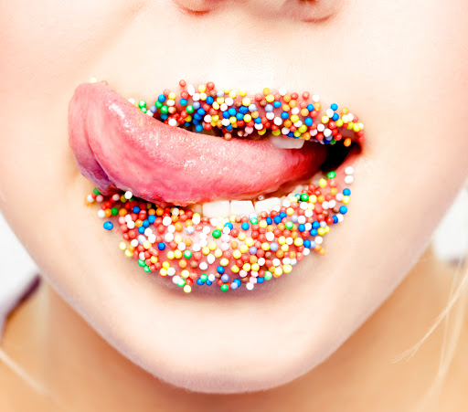

la que al oír una palabra concreta, la persona experimenta un sabor muy intenso en su boca; estas personas tienen ciertas palabras asociadas a sabores y cada palabra la tienen asociada a un sabor concreto. las conexiones de los sentidos relacionadas con el sabor son menos comunes, y también parecen tener menos ventajas. de todos los estudios que se han realizado sobre esto, buscando alrededor del mundo e intentado hablar con personas que sufran esta curiosa experiencia, se sabe que los sabores que pueden experimentar en su boca al oír una palabra, no son sólo los sabores básicos, como dulce, salado, ácido... van desde pizza, yogur, tarta de fresa... a incluso sabores a podrido, a suciedad y cosas muy desagradables; además, no sólo puede incluir sabor, a veces también textura y temperatura. no se sabe muy bien cuál es la causa de la sinestesia, aunque si se conoce una fuerte vinculación genética para ser transmitida de padres a hijos. ha habido muchos estudios que dejan ver una diferencia en el desarrollo de los cerebros de estas personas y de los que no sufrimos este tipo de "conexión extraña". esta diferencia consiste en una mayor comunicación entre ciertas áreas del cerebro, las cuales no interaccionan en cerebros "normales". esta interacción ha sido incluso corroborada con sistemas de imagen, donde puede apreciarse una conexión estructural. ha de decirse, que hay muchos tipos de de sinestesia, más de los recién comentados, sin embargo, hay muy pocas personas en el mundo que las sufren.